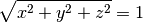
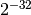

User documentation¶
The stsci.sphere library is a pure Python package for handling spherical polygons that represent arbitrary regions of the sky.
Requirements¶
- Python 2.7
- Numpy 1.4 or later
- astropy 0.3 or later
Coordinate representation¶
Coordinates in world space are traditionally represented by right ascension and declination (ra and dec), or longitude and latitude. While these representations are convenient, they have discontinuities at the poles, making operations on them trickier at arbitrary locations on the sky sphere. Therefore, all internal operations of this library are done in 3D vector space, where coordinates are represented as (x, y, z) vectors. The stsci.sphere.vector module contains functions to convert between (ra, dec) and (x, y, z) representations.
While any (x, y, z) triple represents a vector and therefore a location on the sky sphere, a distinction must be made between normalized coordinates that fall exactly on the unit sphere, and unnormalized coordinates which do not. A normalized coordinate is defined as a vector whose length is 1, i.e.:

To prevent unnecessary recomputation, many methods in this library assume that the vectors passed in are already normalized. If this is not the case, stsci.sphere.vector.normalize_vector can be used to normalize an array of vectors.
When not working in Cartesian vectors, the library allows the user to work in either degrees or radians. All methods that require or return an angular value have a degrees keyword argument. When degrees is True, these measurements are in degrees, otherwise they are in radians.
Warning
Due to constraints in the precision of intersection calculations, points on the sphere that are closer than  along a Cartesian axis are automatically merged into a single point. This prevents intersections from being missed due to floating point rounding error. There is currently no implemented solution to deal with points that need to be closer together.
Spherical polygons¶
Spherical polygons are arbitrary areas on the sky sphere enclosed by great circle arcs. They are represented by the SphericalPolygon class.
Representation¶
The points defining the polygon are available from the points property. It is a Nx3 array where each row is an (x, y, z) vector, normalized. The polygon points are explicitly closed, i.e., the first and last points are the same.
Where is the inside?¶
The edges of a polygon serve to separate the “inside” from the “outside” area. On a traditional 2D planar surface, the “inside” is defined as the finite area and the “outside” is the infinite area. However, since the surface of a sphere is cyclical, i.e., it wraps around on itself, the a spherical polygon actually defines two finite areas. To specify which should be considered the “inside” vs. the “outside”, the definition of the polygon also has an “inside point” which is just any point that should be considered inside of the polygon.
In the following image, the inside point (marked with the red dot) declares that the area of the polygon is the green region, and not the white region.

The inside point of the the polygon can be obtained from the inside property.
Cut lines¶
If the polygon represents two disjoint areas or the polygon has holes, those areas will be connected by cut lines. The following image shows a polygon made from the union of a number of cone areas which has both a hole and a disjoint region connected by cut lines.

Creating spherical polygons¶
SphericalPolygon objects have 4 different constructors:
- SphericalPolygon: Takes an array of (x, y, z) points and an inside point.
- SphericalPolygon.from_radec: Takes an array of (ra, dec) points and an inside point.
- SphericalPolygon.from_cone: Creates a polygon from a cone on the sky shere. Takes (ra, dec, radius).
- SphericalPolygon.from_wcs: Creates a polygon from the footprint of a FITS image using its WCS header keywords. Takes a FITS filename or a astropy.io.fits.Header object.
Operations on Spherical Polygons¶
Once one has a SphericalPolygon object, there are a number of operations available:
- contains_point: Determines if the given point is inside the polygon.
- intersects_poly: Determines if one polygon intersects with another.
- area: Determine the area of a polygon.
- union and multi_union: Return a new polygon that is the union of two or more polygons.
- intersection and multi_intersection: Return a new polygon that is the intersection of two or more polygons.
- overlap: Determine how much a given polygon overlaps another.
- to_radec: Convert (x, y, z) points in the polygon to (ra, dec) points.
- same_points_as: Determines if one polygon has the same points as another. When only sorted unique points are considered (default behavior), polygons with same points might not be the same polygons because the order of the points matter.
- draw: Plots the polygon using matplotlib’s Basemap toolkit. This feature is rather bare and intended primarily for debugging purposes.
Great circle arcs¶
As seen above, great circle arcs are used to define the edges of the polygon. The stsci.sphere.great_circle_arc module contains a number of functions that are useful for dealing with them.
- length: Returns the angular distance between two points on the sphere.
- intersection: Returns the intersection point between two great circle arcs.
- intersects: Determines if two great circle arcs intersect.
- intersects_point: Determines if a point is along the great circle arc.
- angle: Calculate the angle between two great circle arcs.
- midpoint: Calculate the midpoint along a great circle arc.